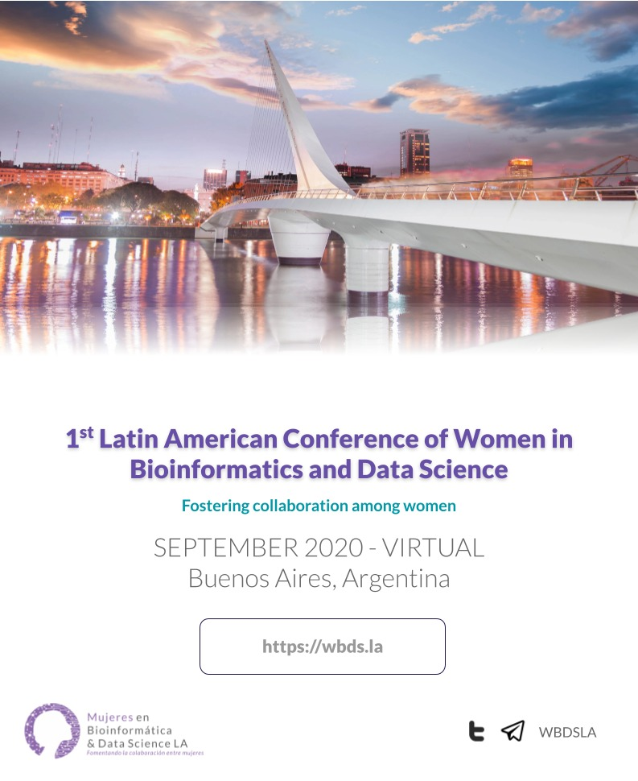
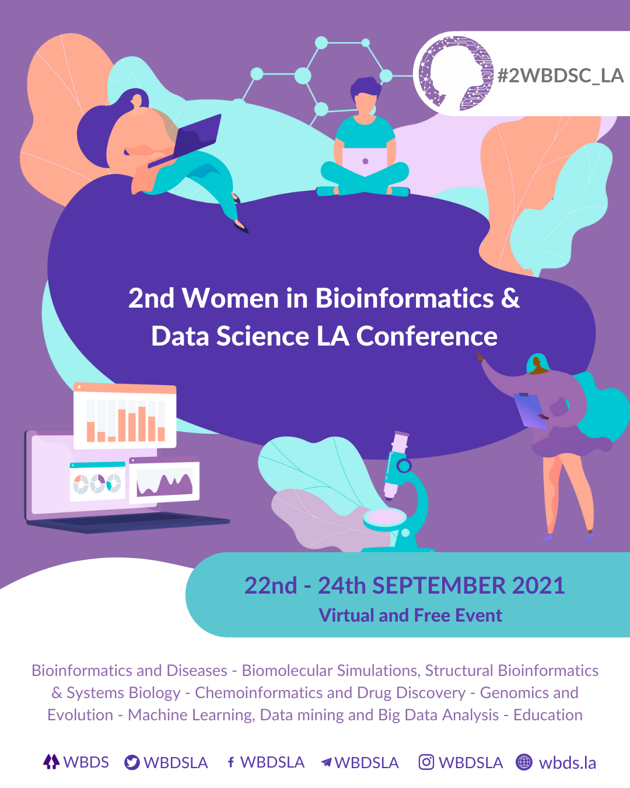

Highlights of the 1st Latin American Conference of Women in Bioinformatics and Data Science
Lucy Jiménez, Liliane Costa Conteville, Ivana Feldfeber, Mercedes Garnham Didier, Georgina Stegmayer, Cristina Marino-Buslje and Ana Julia Velez Rueda
The Biophysicist (2021) 2 (3): 99–102. https://doi.org/10.35459/tbp.2020.000174
The Latin American Congress of Women in Bioinformatics and Data Science aims at making visible the research carried out by women in the fields of Bioinformatics and Data Science. Even in this event generated by women to make the work of women researchers visible, which could be considered a small portion of the whole scientific system, we were able to observe the glass ceiling effects analyzing the data coming from the presented works. Our results show that these spaces are still needed and a great number of women working in the field are still waiting to be properly recognized.
The 1st Women in Bioinformatics & Data Science LA Conference was held in September 2020 with over 800 participants from all over the world. The majority of participants came from South American countries, with Brazil, Argentina, Colombia, and Mexico accounting for 28%, 24.5%, 14.7%, and 7.4%, respectively. We had 17 amazing speakers from all over Latin America, and we received a total number of 170 abstracts, presented as oral and posters. Now you can hear again all the talks on our Youtube channel!
The 2nd Women in Bioinformatics & Data Science LA Conference was held in September 2021 with over 1000 participants from more than 50 countries, with the majority coming from Brazil, Mexico, Argentina, Colombia and Peru. We had 28 amazing speakers from all over Latin America, and we received a total number of 170 abstracts, presented as oral and posters.
